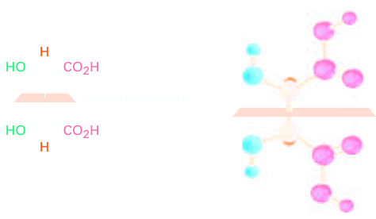

Meso Compounds
Let’s look at another example of a compound with more than one chirality center: the tartaric acid used by Pasteur. The four stereoisomers can be drawn as follows:
The 2R,3R and 2S,3S structures are nonsuperimposable mirror images and therefore represent a pair of enantiomers. A close look at the 2R,3S and 2S,3R structures, however, shows that they are superimposable, and thus identical, as can be seen by rotating one structure 180°.
The 2R,3S and 2S,3R structures are identical because the molecule has a plane of symmetry and is therefore achiral. The symmetry plane cuts through the C2–C3 bond, making one half of the molecule a mirror image of the other half. Because of the plane of symmetry, the molecule is achiral, despite the fact that it has two chirality centers. Compounds that are achiral, yet contain chirality centers, are called meso compounds. Because the compound is superimposable on its mirror image, it is not chiral and does not rotate plane-polarized light. Although the figure has chiral parts such as hands and feet, they are present in pairs of left and right enantiomers arrangeso so that the figure has an internal plane of symmetry. Whenever we encounter a compound that has identical chirality centers, placed symmetrically, we should expect meso-stereoisomers to occu, resulting in the total number of stereoisomers being less than that predicted by the 2n rule.
Thus, tartaric acid exists in three stereoisomeric forms: two enantiomers and one meso form.
Some physical properties of the three stereoisomers are listed in Table 5.3. The (1)- and (2)-tartaric acids have identical melting points, solubilities, and densities, but they differ in the sign of their rotation of plane-polarized light. The meso isomer, by contrast, is diastereomeric with the (+) and (-) forms. It has no mirror-image relationship to (+)- and (-)-tartaric acids, is a different compound altogether, and has different physical properties.
| Stereoisomer | [a]D | Melting point(°C) | Density (g/cm3) | Solubility at 20 °C (g/100 mL H2O) |
|---|---|---|---|---|
| (+) | 168–170 | +12 | 1.7598 | 139.0 |
| (−) | 168–170 | −12 | 1.7598 | 139.0 |
| Meso | 146–148 | 0 | 1.6660 | 125.0 |